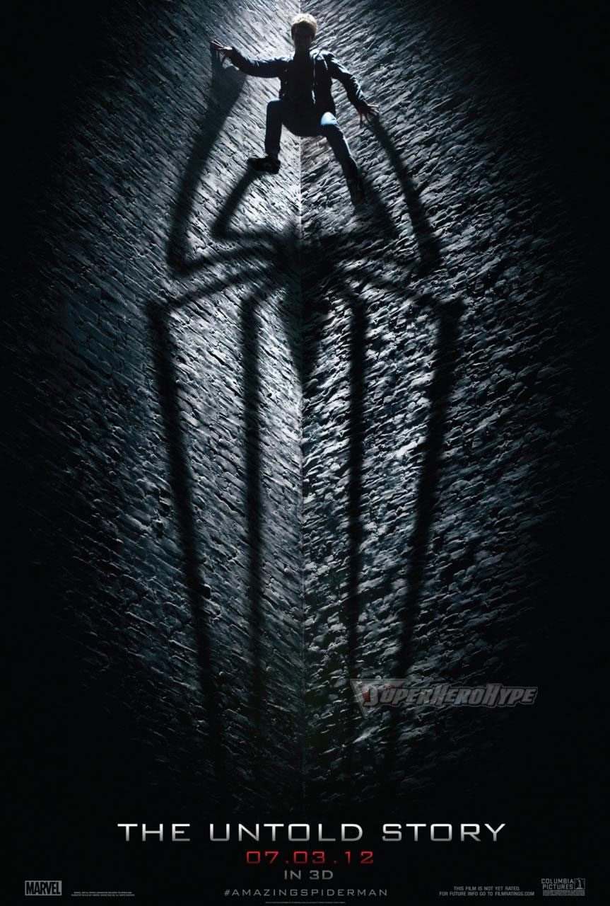

EL SORPRENDENTE SPIDERMAN ANDREW GARFIELD.

Tras la cancelación de Spider man 4 en 2010, Sony puso en marcha una nueva franquicia. Para la difícil tarea contrató a Marc Webb como director mientras que secretamente comenzaban un casting para elegir a los nuevos protagonistas. Dando vida a Peter Parker estaría un joven casi nada conocido llamado Andrew Garfield. Con 27 años de edad, Andrew empezaba a llamar la atención en la industria del cine gracias a su papel de Eduardo Saverin en la película The Social Network, misma que contaba los orígenes de Facebook.
El primer adelanto de The Amazing Spiderman se mostró en julio de 2011 mientras que Andrew Garfield hizo una mítica aparición durante la Comic- Con de San Diego apenas unos días después. Ahí, el actor disfrazado de spider man con un traje de muy bajo presupuesto, sorprendió a todos cuando hablo mediante un micrófono para confesar su fanatismo por el personaje desde que era pequeño.

Luego en 2014 llegaria The Amazing Spiderman 2. Donde Spiderman tendria un traje mas parecido al de los comics y en esta pelicula veriamos la muerte de Gwen Stacy interpretada por Emma Stone, siendo este un gran golpe para el aracnido. Sin embargo la pelicula no recaudo lo que esperaba y fue cancelada.Andrew Garfield retomo su papel en Spiderman No Way Home y ahora la gente espera que tenga su tercer pelicula Andrew para tener un cierre.
Aqui te dejamos un video cuando fue a la Comic Con disfrazado de Spiderman y expreso su amor por el personaje.
Aqui te dejamos posters de sus dos peliculas.
